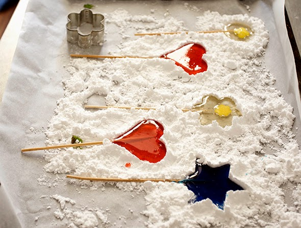

Lollies selber machen
Man nimmt eine Keksform und drückt darum den puderzucker. Vorsichtig entfernt man das Förmchen. In einer beschichteten Pfanne erhitzt man Zucker und ein bischen Wasser. Wenn man farbige Lollies haben möchte kann man auch Lebensmittelfarbe dazu tun. ( Es sollte nicht zu flüssig sein, sonst werden die Lollies nicht fest.)
Bevor man die Zuckermasse in die Mulden fliessen lässt, legt man noch ein Schaschlickspieß dazu.
Jetzt musst Du einen Tag warten.